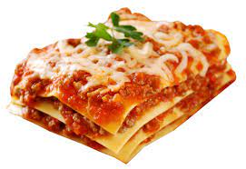

My Favorite Lasagna Recipe

The Simple And Fast Lasagna
This is the best lasagna you'll ever eat, something out of this world.
My family makes this recipe every week on Wednesday night.
This recipe can be made without or without meat, we love it both ways
Gather The Ingredients
- Container of ricotta cheese
- Mozzarella Cheese
- Parmesan Cheese
- 1 egg
- Italian Seasoning
- Marinara Sause
- Lasagna Pasta Noodles
Steps To Make The Lasagna
- Preheat Oven to 375 degrees F
- Cook noodles until tender but not soggy wet like a wet sock
- combine all cheeses, egg and Italian seasoning in a bowl
- Mix contents of bowl very well with a fork
- Add first layer of pasta to bottom of baking dish
- Add layer of cheese mixture to pasta noodles
- Keep adding alternating layers of pasta noodles and cheese mixture
- Bake for 45 minutes
Serve hot.
Back To Odin Recipes